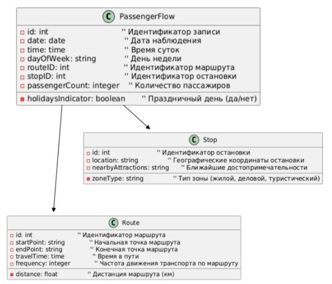
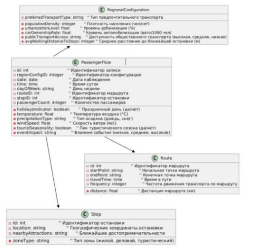

В статье исследуются региональные особенности внедрения машинного обучения (ML) для прогнозирования пассажиропотока в системах общественного транспорта. Несмотря на широкое применение ML в транспортной аналитике, стандартные модели часто не учитывают специфические факторы, присущие отдельным регионам. Влияние климата, демографические характеристики, плотность населения и степень урбанизации, а также культурные и поведенческие особенности пассажиров существенно варьируются в разных частях страны и могут оказывать значительное воздействие на пассажиропоток. Эти региональные различия приводят к необходимости адаптации моделей машинного обучения, чтобы повышать точность предсказаний и улучшать планирование транспортной сети. В статье приводится анализ факторов, влияющих на пассажиропоток в городах и малых населенных пунктах России, а также предложены практические рекомендации по учету этих факторов при проектировании транспортных систем. Полученные результаты важны для разработки более универсальных подходов к прогнозированию в условиях российских городов, способных обеспечить эффективность транспортного обслуживания.
МАШИННОЕ ОБУЧЕНИЕ, ПРОГНОЗИРОВАНИЕ ПАССАЖИРОПОТОКА, ОБЩЕСТВЕННЫЙ ТРАНСПОРТ, РЕГИОНАЛЬНЫЕ ОСОБЕННОСТИ, ТРАНСПОРТНАЯ СЕТЬ, ИНФРАСТРУКТУРА, КЛИМАТИЧЕСКИЕ ФАКТОРЫ.
Savenkova Valeria Olegovna, Savkova Elena Osipovna
«Donetsk National Technical University», Donetsk, Russian Federation
The article explores the regional features of the introduction of machine learning (ML) to predict passenger traffic in public transport systems. Despite the widespread use of ML in transport analytics, standard models often do not take into account the unique factors inherent in individual regions. The influence of climate, demographic characteristics, population density and degree of urbanization, as well as cultural and behavioral characteristics of passengers vary significantly in different parts of the country and can have a significant impact on passenger traffic. These regional differences lead to the need to adapt machine learning models in order to increase the accuracy of predictions and improve the planning of the transport network. The article provides an analysis of the factors affecting passenger traffic in cities and small towns in Russia, as well as practical recommendations for taking these factors into account when designing transport systems. The results obtained are important for the development of more universal approaches to forecasting in the conditions of Russian cities that can ensure the efficiency of transport services.
Machine learning, passenger traffic forecasting, public transport, regional characteristics, transport network, infrastructure, climatic factors.
В условиях современных городов с их динамично развивающимися транспортными сетями прогнозирование пассажиропотока является важной задачей для поддержания устойчивой работы общественного транспорта. Прогнозы помогают улучшить маршруты, повысить удовлетворенность пассажиров, рационализировать затраты и повысить общее качество транспортного обслуживания. Несмотря на успехи машинного обучения, его внедрение в проекты общественного транспорта сталкивается с рядом трудностей, связанных с региональной спецификой. В России, где города различаются по климату, плотности населения, уровню автомобилизации и структуре транспортной сети, стандартные алгоритмы часто оказываются менее эффективными, поскольку не учитывают этих специфических характеристик. В результате возникает необходимость разработки более гибких ML-моделей, способных адаптироваться к особенностям каждого региона.
Внедрение машинного обучения в прогнозирование пассажиропотока позволяет лучше управлять общественным транспортом, однако стандартные ML-модели, разработанные для крупных мегаполисов с устойчивыми транспортными потоками, редко учитывают разнообразие условий, присущих разным городам и поселениям России. В северных городах, например, сезонные колебания могут приводить к значительным изменениям в пассажиропотоке в зависимости от температуры и состояния дорог, в то время как южные регионы, где теплый климат сохраняется на протяжении года, не сталкиваются с такими проблемами. Данные различия существенно влияют на точность ML-прогнозов и требуют разработки подходов, учитывающих климатические, демографические, культурные и другие локальные особенности для достижения большей точности и применимости.
В последние годы значительно увеличилось количество исследований, посвященных прогнозированию пассажиропотока. Исследования Вакуленко и Еврееновой, посвященные закономерностям перемещения пассажиров через транспортные узлы, акцентируют внимание на важности учета плотности пассажиропотоков и особенностей транспортной инфраструктуры для повышения точности прогнозов [1]. Однако данное исследование сосредоточено в основном на крупных городах и транспортно-пересадочных узлах, таких как вокзалы и станции метро, и не охватывает особенности менее населенных и отдаленных регионов, где транспортные условия и пассажиропоток сильно зависят от сезонных и культурных факторов.
Работа Шипилова и Раюшкиной на тему предпочтений пассажиров к различным видам транспорта выявляет значимость учета пассажирских предпочтений и удовлетворенности транспортным обслуживанием при построении прогнозных моделей. В статье можно увидеть это распределение на диаграмме зависимости привлекательности некоторых видов транспорта от стоимости проезда на них и времени ожидания подвижного состава. Однако авторы сосредотачиваются на крупных городах с развитой транспортной сетью и регулярными интервалами движения, что мало применимо в малых городах и поселениях, где транспортные потребности часто зависят от демографической структуры и уровня автомобилизации [2]. В малых городах Пензенской области, например, по данным исследования Пильгейкиной, наблюдается высокий уровень автомобилизации и постоянное сокращение населения, что существенно снижает пассажиропоток в общественном транспорте и требует специфического подхода к его прогнозированию [3]. Таким образом, остается нерешенной проблема разработки универсальных, но адаптивных к локальным условиям моделей прогнозирования, которые учитывали бы различные климатические, демографические и культурные факторы, влияющие на транспортные потоки.
Цель данной статьи — исследовать особенности региональных факторов, влияющих на пассажиропоток, и предложить подходы для адаптации алгоритмов машинного обучения, которые могут учитывать локальные условия различных регионов России. В рамках исследования ставятся следующие задачи:
Климат является ключевым фактором, влияющим на интенсивность пассажиропотока в различных регионах России. В северных городах, таких как Архангельск и Мурманск, наблюдается значительное сезонное колебание пассажиропотока. Зимой суровые погодные условия и пониженная температура приводят к увеличению спроса на общественный транспорт, так как пешеходные и велосипедные перемещения становятся менее удобными и безопасными. Однако из-за сложных погодных условий, таких как снегопады и гололед, транспортная сеть часто работает с перебоями, что также нужно учитывать в прогнозах.
В противоположность этому, в южных регионах России, например, Краснодарском крае или Астраханской области, теплый климат сохраняется на протяжении большей части года, что поддерживает более равномерное распределение пассажиропотока. Здесь основной фактор — высокая плотность пассажиров в летний сезон, что связано с туристическими потоками. Также в регионах с засушливым климатом, как в Волгоградской области, пассажиропоток может зависеть от погодных условий, так как летом при высоких температурах многие жители предпочитают использовать кондиционированные транспортные средства.
Плотность населения и уровень урбанизации также оказывают значительное влияние на пассажиропоток. В мегаполисах, таких как Москва и Санкт-Петербург, наблюдается высокая плотность населения и большая нагрузка на транспортную инфраструктуру, особенно в часы пик. В таких городах требуются модели, учитывающие плотные транспортные узлы и возможность многократных пересадок. Например, регулярные и высокочастотные рейсы востребованы вблизи крупных деловых и жилых районов, тогда как в удаленных районах — меньшая плотность рейсов и иной график обслуживания.
В малых городах, таких как Каменка и Спасск, плотность населения гораздо ниже, а общественный транспорт менее развит. Здесь часто наблюдается высокая зависимость от личных автомобилей, что снижает пассажиропоток в общественном транспорте. Это накладывает определенные ограничения на прогнозы ML-моделей, поскольку в таких регионах необходимо учитывать переменную интенсивность использования общественного транспорта в зависимости от наличия альтернатив, таких как автомобили.
Культурные предпочтения и поведенческие модели жителей различных регионов также оказывают влияние на пассажиропоток. Например, в центральной части России наблюдается тенденция к широкому использованию частного транспорта, особенно в пригородных зонах, где жители предпочитают личные автомобили. В то же время в городах с ограниченной дорожной инфраструктурой или высокой стоимостью парковки, таких как Санкт-Петербург, более популярным является общественный транспорт.
В северных регионах, как показывают исследования, пассажиры склонны к использованию общественного транспорта зимой и предпочитают пешие передвижения в летние месяцы. В курортных зонах, например, в Краснодарском крае, пассажиропоток также зависит от сезона и туристических потоков, что требует учета временных колебаний, связанных с пиковым сезоном.
Немаловажным фактором является состояние и пропускная способность транспортной инфраструктуры в разных регионах. В крупных городах имеется разветвленная сеть метро, трамваев, автобусов и маршрутных такси, что позволяет более гибко регулировать пассажиропоток. В малых городах и сельской местности транспортная инфраструктура развита слабее, и общественный транспорт представлен чаще всего автобусами с ограниченными маршрутами. Например, в малых городах Пензенской области, как показано в исследовании Пильгейкиной, низкая пропускная способность дорог и малое количество общественного транспорта усложняют задачу прогнозирования пассажиропотока, так как пассажиры вынуждены подстраиваться под фиксированные графики движения [3].
Отдельные регионы могут сталкиваться с трудностями в организации регулярного общественного транспорта также из-за нехватки транспортных средств. Например, как сообщается в статье за 31 января 2024 года, в Донецке городской транспорт был значительно сокращен, что оставило город практически без регулярного транспортного сообщения [4]. В таких случаях для прогнозирования пассажиропотока важно учитывать не только уровень автомобилизации и плотность населения, но и текущее состояние транспортной инфраструктуры, чтобы точнее определять фактический спрос на оставшиеся маршруты.
Чтобы единая модель могла учитывать различия в пассажиропотоке по регионам, необходимо расширить набор данных, включив в него поля, отражающие специфические факторы каждого региона. Базовая структура модели учитывает лишь общие параметры, такие как расписание, частота движения и местоположение остановок.

Ниже представлен перечень полей, которые могут быть добавлены к данным для улучшения точности прогнозов и адаптации модели к различным климатическим, демографическим и инфраструктурным условиям.
Каждое из этих полей добавляет важный аспект для учета региональных различий, что позволяет единой модели более точно учитывать уникальные особенности каждого региона. С добавлением таких данных модель может динамично подстраиваться под локальные условия, улучшая точность прогнозов пассажиропотока.

Включение в модель машинного обучения дополнительных полей, описывающих климатические, демографические, инфраструктурные и социальные факторы, позволяет значительно улучшить точность прогнозов и сделать их более адаптированными к условиям конкретных регионов.
Практическая реализация данных рекомендаций позволит: повысить точность прогнозов за счет детализированного учета факторов, специфичных для каждого региона; оперативно адаптироваться к изменениям, связанным с сезонными и социальными факторами, а также изменениями в транспортной инфраструктуре; поддерживать более высокую устойчивость транспортной системы за счет своевременной корректировки расписаний, маршрутов и числа транспортных единиц.